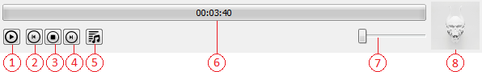
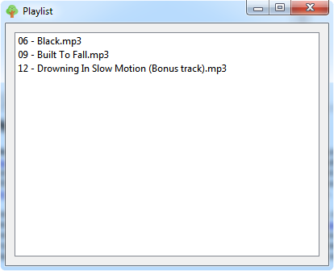

Аудиоплеер предназначен для воспроиведения .mp3-файлов.
Папки вооспроизведения для игр находятся в директории программы, в папкe Games, дальше в папке буквы на которую начинается игра, в папке с игрой, в папке music (например, C:\project\GameTree\Games\T\Trackmania Turbo\music). В папке covers лежат обложки.
Папки вооспроизведения для модов находятся в директории программы, в папкe Games, дальше в папке буквы на которую начинается игра, в папке с игрой, в папке mods, в папке с названием мода, а папке music (например, C:\project\GameTree\Games\H\Heroes of Might & Magic III\mods\Shadow of Death\music). В папке covers лежат обложки.
Содержание


При нажатии два раза на ЛКМ(левая кнопка мыши) на определенную позицию в списке воспроизведении, данная композиция начнет воспроизводится.